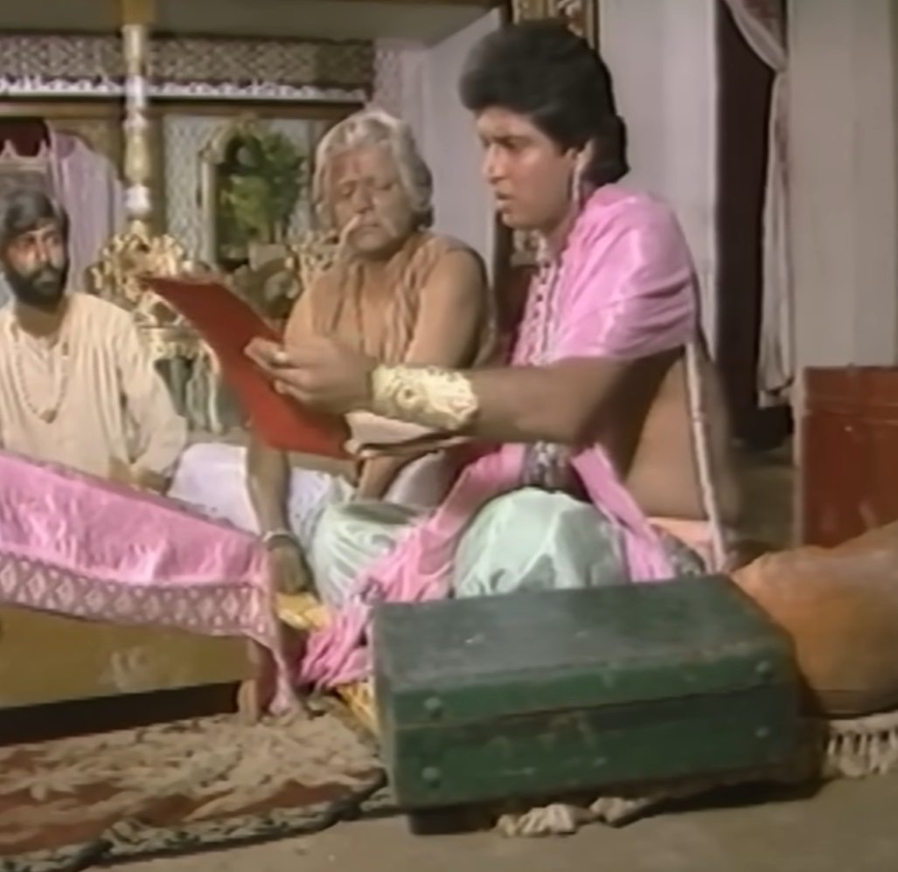
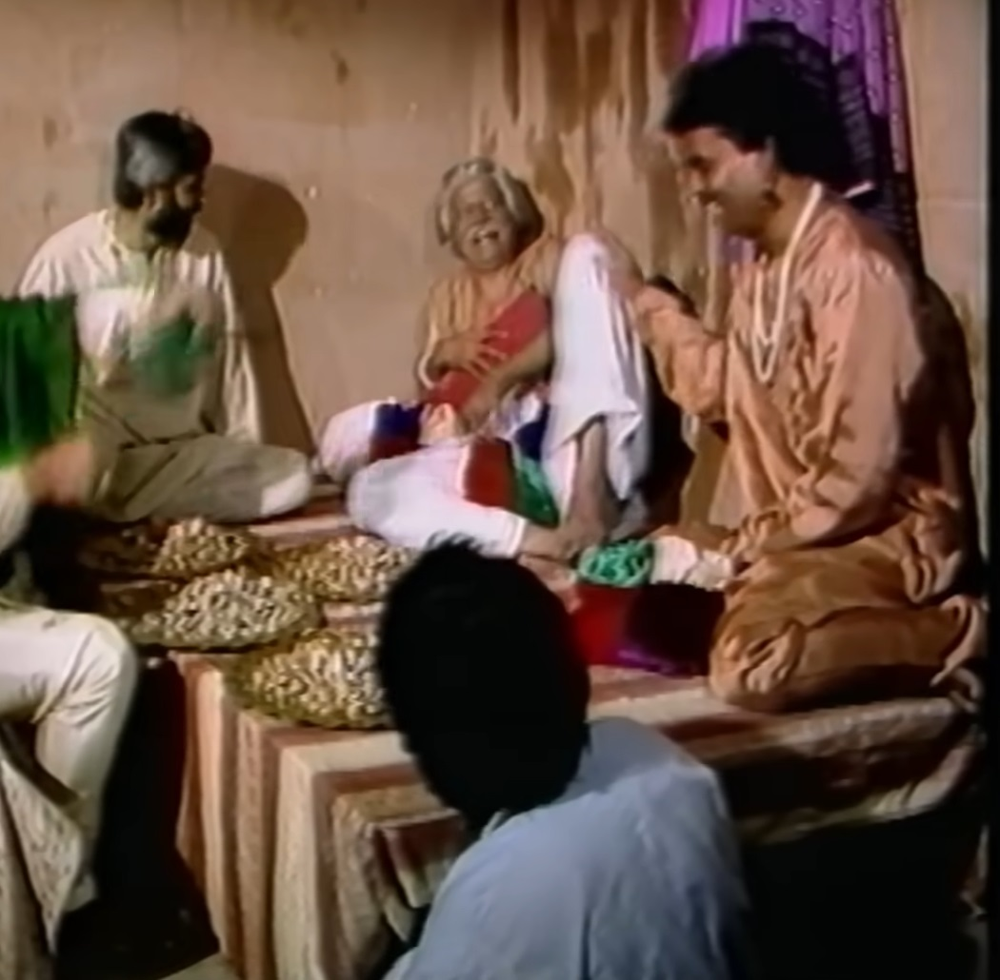
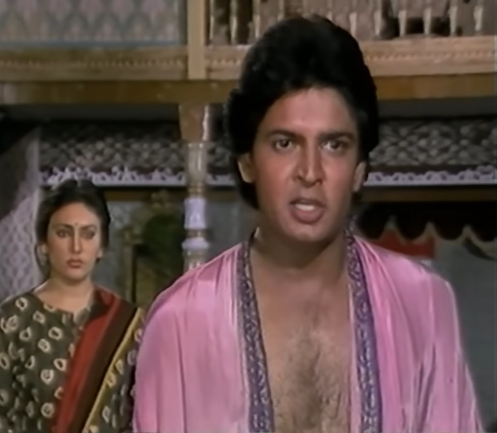
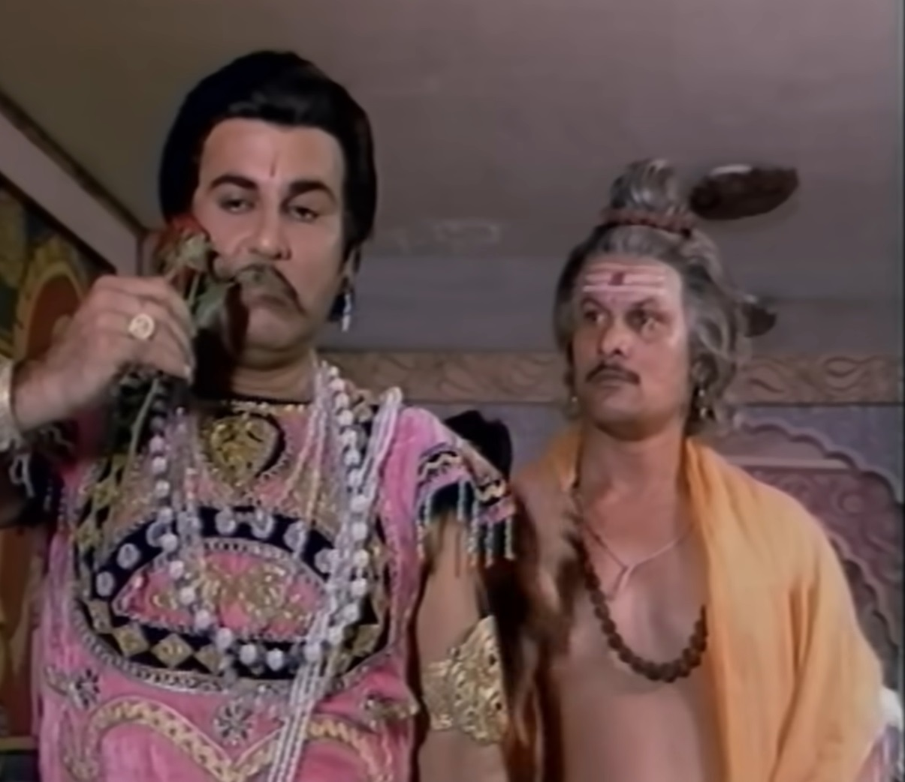

|  |
When Vikram catches Betal again and takes him away, Betal gives Vikram a new direction. Heard a story in which there was a poor man called Apoorva who was very poor and his There was a friend whose name was Avinash who was rich. get rich quick Looking for a chance to become. Apoorva's daughter Anjali and Avinash's son Satyakam loved each other since childhood. Apoorva at all costs If he wanted to change the situation, one day Avinash talked about going on Ayodhya trip. and tells Apoorva to help his son Satyakam. Pay off the debt. Avinash told Apoorva that my Ayodhya After returning, both of them think about the marriage of their children. On the wealth of Apoorva Avinash He keeps his eyes fixed and as soon as Avinash starts looking for Satyakam's Janam Patrika When he goes, he hides Avinash's account book from behind. Apoorva Avinash's Avinash, along with some people, got the loan in his name by forging signatures. Writes it in the ledger. Next day Apoorva keeps that ledger And gets his men to get the loan money from Avinash. |
|
Satyakam defaulted on his father's loan and had to give away all the money and the house. goes. Apoorva meets with his friends at his home and When he talks about his share, Anjali secretly listens to everything. Anjali When she is sad to hear this, she goes to the king and informs the king about this. She tells me that her father has robbed an innocent man of lakhs of rupees. Raj listens to her and says that we cannot listen to your complaint if If that boy had come and complained to us, I would have helped. Anjali tells the king That the boy is so innocent that he will not accuse my father. Raja sends Anjali back. The king's son was seeing and hearing all this He sends his men after Anjali. Direct from Anjali Raja When she comes to Satyakam and tells her everything, Satyakam says that your Father is my father's friend, I cannot insult him and Cannot be dragged into the court. |
 |
|  | Avinash appears divinely there and hears everything and takes away all his loot. Takes away the money and the house papers. The king's son's spy came to him He tells that Anjali loves Satyakam, so Raj comes to his son Satyakam. Commands his men to kill. Prince's son to Satyakam Kills by suffocating the breath. Avinash divinely comes to Apoorva And Apoorva is surprised to see him that he had gone on a journey. Avinash tells him that he returned yesterday itself. Avinash tells him that I heard that you have earned a lot of money in a few days. my son Satyakam has paid off all my debts so my hand is a bit tight So please lend me 1 lakh pieces. Apoorva would have given the pieces to Avinash And he asks to pay one month's interest, then Avinash takes money from him. He goes away after doing the tax and comes to the Kali temple the next day to settle all his accounts. Get it done. When Apoorva goes there the next day, he comes to know that Hai has been killed by Avinash and he did all this to take revenge from him. Because he had cheated and robbed his son. Apoorva returned from there and When he goes to his friends to ask for help, he is pushed out by his friends. Let's give. |
|
Apoorva's condition becomes very bad. the prince calls a magician And by using magic to make his form similar to that of Satyakam, he plans to marry Anjali. He sets out to get it. Avinash comes back and brings his son Satyakam back to his senses. Lata comes and asks him to go to Anjali's wedding venue. also amazing He reaches there after hearing about Anjali's marriage. Avinash Raja also has Goes and tells her also about the marriage. Satyakam would have reached there And as soon as Satyakam appears in front of the prince, the magician's magic is turned upside down, revealing the prince's true form and The magician dies. |
 |